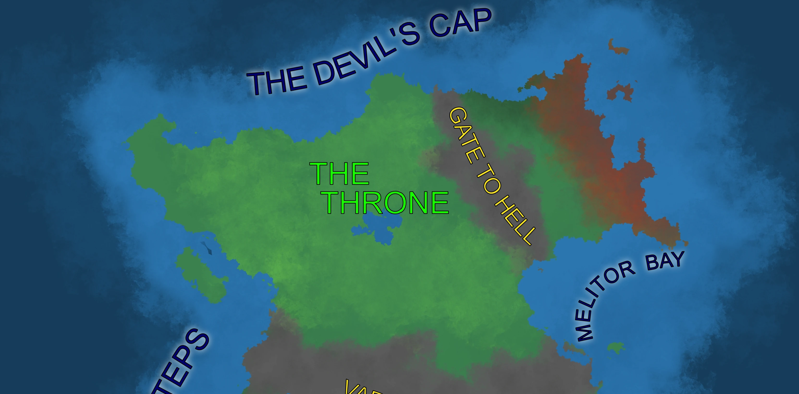

Scheaming of the Throne
In the lands of Deep north lies the oriental Empire of Lian ruled by an old elven dynasty that was spared the worst of the Starbeast’s rule. While other parts of Sain may be unforgiving, when it comes to the nature and creatures living there, Lian is both similar and different. Here both politics and environment clash creating a very volatile situations.
Lian Lies in a western part of the Throne peninsula and is relatively smaller compered to the nations in the south of the continent. It is surrounded by roaming tribes of orc nomads, whit whom they live in an uneasy truce/alliance against a common enemy – the demonic Invasion to the east. Nobody knows when or why it started, as they are there as far as the written records reach. This demonic invasion is one of the reasons why the Starbeast did not put much focus on this region.

Peoples
In the Throne there are two major civilized societies living in a fragile harmony at the moment. First of these is majority elven, mentioned before Empire of Lian in the Western part of the peninsula. They descend from the long line of land attuned, some of whom up to this day roam this land, taking in how it has changed over the millennia. People here are strict and bureaucratic, living in accordance to laws of the land and the empire, leaving mostly peaceful lives, that sometimes turn into ones full of drama.
Other peoples here are nomadic herders that live in the great swaths of land of the central Throne. They do not have a central authority living in kinship groups, sometimes forming larger bands, when the time calls for it. They are mostly orcish and goblin, which help them to withstand the harsh terrain, that they call the sea of grass.
Both above mentioned cultures are more communal than these in the rest of Sain, but with the recent rapid advancement of technology it started slowly eroding it, introducing more and more individuality into peoples’ lives.
On the other side of the spectrum the Throne there are demons ravaging these lands for generations that come from the eastern region. Their society is currently unknown, but they have been at constant war with pople of the throne, which was both blessing and a curse, due to it slowing, the Starbeast’s advance.
Environment
Most of the region is covered in medium to cold temperate plains and forests, that provide great living conditions for the members of united races, but due to the land’s topology the region is also prone to wars and struggles, none more prevalent than the great conflict with the demons.
And on the topic of demons, the land to the east of peninsula, behind the gate to hell has been transformed into scorched hellish landscape over the millennia of demonic rule, leaving it barren and uninhabitable, even if the demons were to just disappear.
Politics
In the Throne one can find 3 major political groups. First of which is the Empire of Lian – a giant and ancient bureaucracy, which only recently started industrializing and opening its full potential. It consists of many internal groups, that united together against common enemy and survived through the ages.
The second group are the nomadic people, mentioned before, who live in smaller, less organized groups, who while allied with themselves and Lian, remain more independent and prone to conflict. In the time of need they choose a Great Khan from among themselves to mobilize and defent their people.
Last group are the demons ruled by demonic princes, and ravage the land of the Throne. Not much is known about them, aside from their destructive tendencies.
Magics
The Throne is the realm, where magics are the closest to the ones that have created Sain we know today. Most of them are in some way related to nature and the general primordial, but still they were influenced by both the demonic powers present in the region, as well, as the residual forces of the Starbeast’s influence.
While no known sources can confirm the existence of pure magic on the entirety of Sain, the Throne is definitively one of the closest, when it comes to their purity.
History
As shown above the Throne is place of many twists and turns. While it changes drastically from time to time, enacting a deep, permanent change here is hard to accomplish, as the current ruling dynasty has been in and out of power for millennia.
There are many written records here, but they are hidden deep within ancient libraries, waiting for someone to uncovered, somewhat obscuring the past, even despite many residents being elves and thus having much deeper historical knowledge. The only question is who will uncover them.